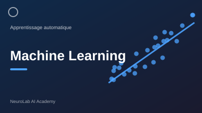
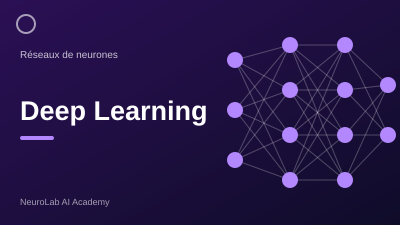
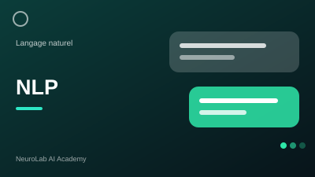
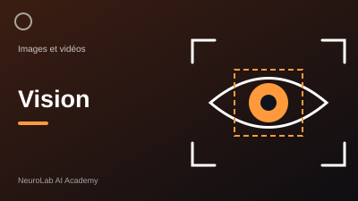
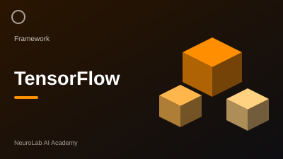
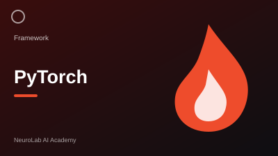
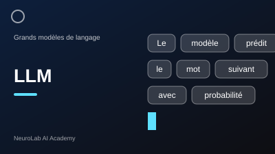

IA Générative Essentiel
IA Générative Essentiel réunit les modèles, les outils et les bonnes pratiques pour créer du texte, des images et du code. Collaborez avec vos équipes et découvrez comment donner vie à vos projets d'IA.
CommencerBienvenue sur NeuroLab, la plateforme d'apprentissage de l'intelligence artificielle
Commencer
Découvrez comment les algorithmes apprennent à partir des données pour classer, prédire et recommander.
Lire plus
Voyez comment les réseaux de neurones profonds reconnaissent des motifs complexes dans les données.
Lire plus
Apprenez comment les machines comprennent et génèrent le langage humain : traduction, résumé et chatbots.
Lire plus
Comprenez comment l'IA analyse les images et les vidéos pour détecter, identifier et segmenter des objets.
Lire plusIA Générative Essentiel réunit les modèles, les outils et les bonnes pratiques pour créer du texte, des images et du code. Collaborez avec vos équipes et découvrez comment donner vie à vos projets d'IA.
Commencer
Découvrez comment TensorFlow permet de construire, entraîner et déployer des modèles d'apprentissage automatique à grande échelle.
Lire plus
PyTorch offre un cadre flexible pour la recherche : définissez vos réseaux, entraînez-les sur GPU et expérimentez rapidement.
Lire plusApprenez comment Hugging Face donne accès à des milliers de modèles préentraînés, prêts à être testés et adaptés à vos besoins.
Lire plus
Voyez comment fonctionnent les grands modèles de langage et comment rédiger des prompts efficaces pour obtenir des réponses fiables.
Lire plusNeuroLab AI Academy forme la nouvelle génération de spécialistes de l'intelligence artificielle et de la science des données. Apprenez à concevoir, entraîner et déployer des modèles innovants qui transforment les données en véritables leviers de performance.
CommencerSuivez-nous: